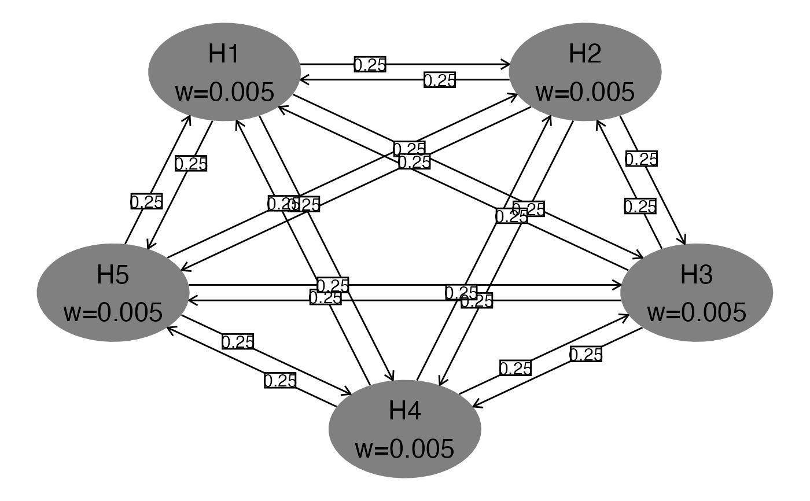
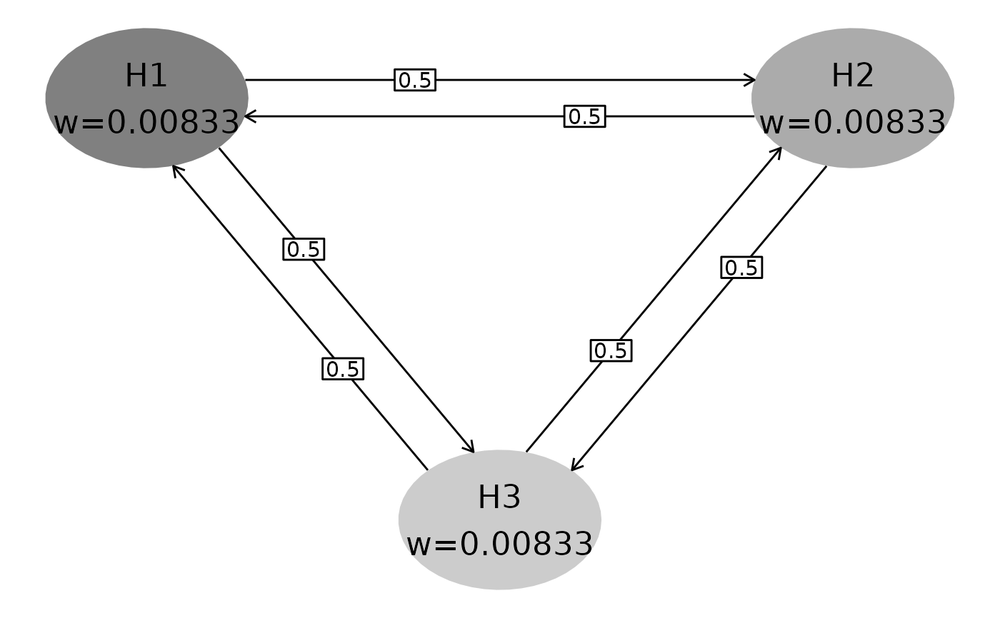
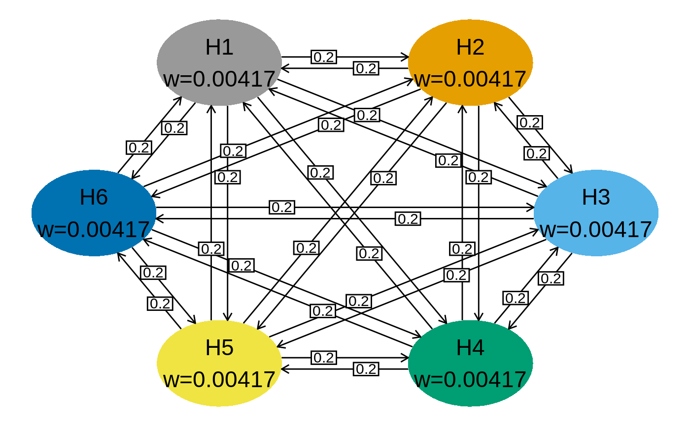
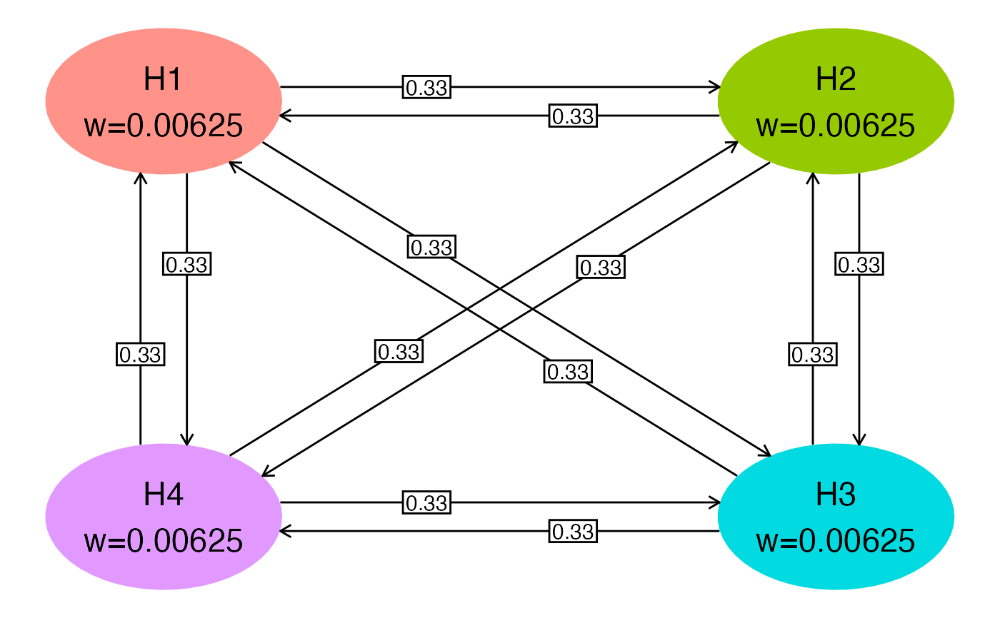
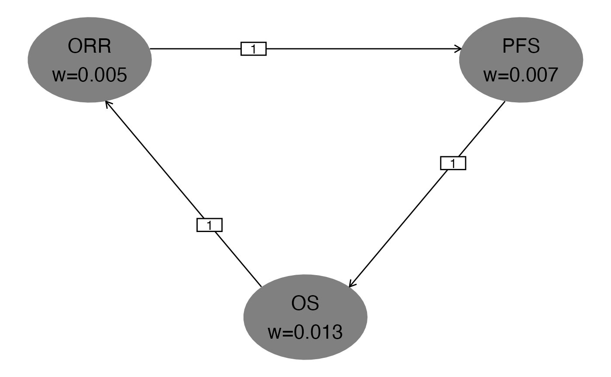
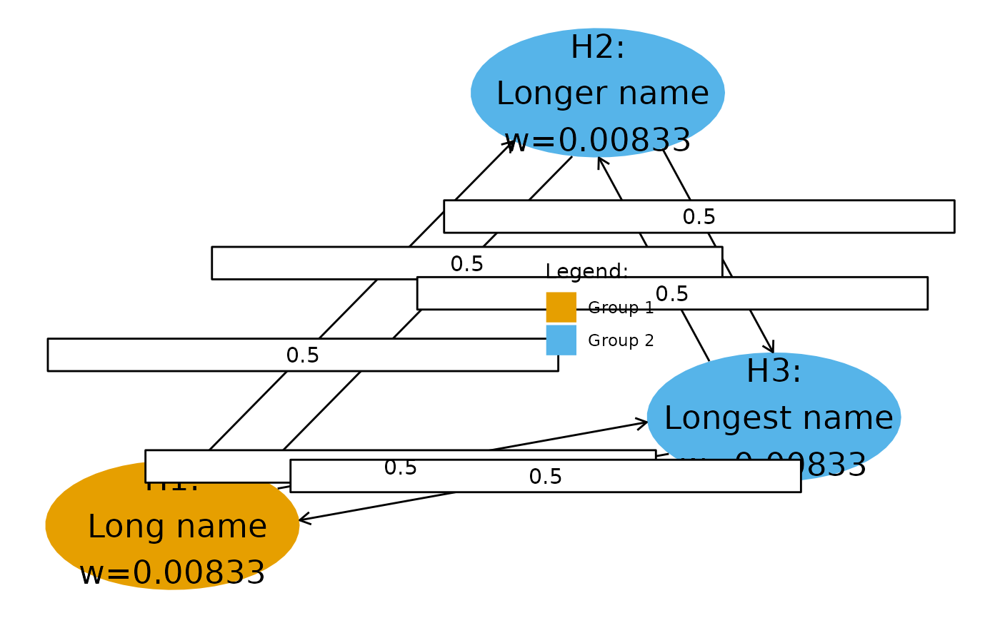

hGraph.RdhGraph() plots a multiplicity graph defined by user inputs.
The graph can also be used with the ***gMCP*** package to evaluate a set of nominal p-values for the tests of the hypotheses in the graph
hGraph( nHypotheses = 4, nameHypotheses = paste("H", (1:nHypotheses), sep = ""), alphaHypotheses = 0.025/nHypotheses, m = matrix(array(1/(nHypotheses - 1), nHypotheses^2), nrow = nHypotheses) - diag(1/(nHypotheses - 1), nHypotheses), fill = 1, palette = grDevices::gray.colors(length(unique(fill)), start = 0.5, end = 0.8), labels = LETTERS[1:length(unique(fill))], legend.name = " ", legend.position = "none", halfWid = 0.5, halfHgt = 0.5, trhw = 0.1, trhh = 0.075, trprop = 1/3, digits = 5, trdigits = 2, size = 6, boxtextsize = 4, arrowsize = 0.02, radianStart = if ((nHypotheses)%%2 != 0) { pi * (1/2 + 1/nHypotheses) } else { pi * (1 + 2/nHypotheses)/2 }, offset = pi/4/nHypotheses, xradius = 2, yradius = xradius, x = NULL, y = NULL, wchar = if (as.character(Sys.info()[1]) == "Windows") { "w" } else { "w" } )
| nHypotheses | number of hypotheses in graph |
|---|---|
| nameHypotheses | hypothesis names |
| alphaHypotheses | alpha-levels or weights for ellipses |
| m | square transition matrix of dimension `nHypotheses` |
| fill | grouping variable for hypotheses |
| palette | colors for groups |
| labels | text labels for groups |
| legend.name | text for legend header |
| legend.position | text string or x,y coordinates for legend |
| halfWid | half width of ellipses |
| halfHgt | half height of ellipses |
| trhw | transition box width |
| trhh | transition box height |
| trprop | proportion of transition arrow length where transition box is placed |
| digits | number of digits to show for alphaHypotheses |
| trdigits | digits displayed for transition weights |
| size | text size in ellipses |
| boxtextsize | transition text size |
| arrowsize | size of arrowhead for transition arrows |
| radianStart | radians from origin for first ellipse; nodes spaced equally in clockwise order with centers on an ellipse by default |
| offset | rotational offset in radians for transition weight arrows |
| xradius | horizontal ellipse diameter on which ellipses are drawn |
| yradius | vertical ellipse diameter on which ellipses are drawn |
| x | x coordinates for hypothesis ellipses if elliptical arrangement is not wanted |
| y | y coordinates for hypothesis ellipses if elliptical arrangement is not wanted |
| wchar | character for alphaHypotheses in ellipses |
A `ggplot` object with a multi-layer multiplicity graph
See vignette **Multiplicity graphs formatting using ggplot2** for explanation of formatting.
# Add colors (default is 3 gray shades) hGraph(3,fill=1:3)# Colorblind palette cbPalette <- c("#999999", "#E69F00", "#56B4E9", "#009E73", "#F0E442", "#0072B2", "#D55E00", "#CC79A7") hGraph(6,fill=as.factor(1:6),palette=cbPalette)# different alpha allocation, hypothesis names and transitions alphaHypotheses <- c(.005,.007,.013) nameHypotheses <- c("ORR","PFS","OS") m <- matrix(c(0,1,0, 0,0,1, 1,0,0),nrow=3,byrow=TRUE) hGraph(3,alphaHypotheses=alphaHypotheses,nameHypotheses=nameHypotheses,m=m)# Custom position and size of ellipses, change text to multi-line text # Adjust box width # add legend in middle of plot hGraph(3,x=sqrt(0:2),y=c(1,3,1.5),size=6,halfWid=.3,halfHgt=.3, trhw=0.6, palette=cbPalette[2:4], fill = c(1, 2, 2), legend.position = c(.6,.5), legend.name = "Legend:", labels = c("Group 1", "Group 2"), nameHypotheses=c("H1:\n Long name","H2:\n Longer name","H3:\n Longest name"))